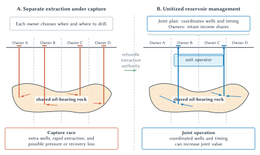

Four Parcels, One Oil Reservoir
Imagine four landowners whose parcels sit above the same oil-bearing formation. Survey markers divide the surface into separate legal parcels, but the oil underground can move through connected rock. A well drilled on one parcel may draw oil that otherwise could have been recovered through a neighboring well.
Suppose the legal starting point is a simplified rule of capture: an owner may keep oil lawfully extracted through a well on that owner’s land. Each owner now faces a strategic problem. Waiting could preserve reservoir pressure and reduce the number of wells needed to recover the oil. But an owner who waits risks leaving more oil for neighbors to capture. If the neighbors drill quickly, restraint is costly. If the neighbors wait, drilling first is attractive.
In this simplified setting, rapid drilling resembles a multi-person prisoner’s dilemma. Each owner’s defensive response makes sense given the choices of the others, yet the combined result can leave all of them worse off. They may drill more wells than a single operator would choose, incur avoidable costs, pump too rapidly, dissipate useful reservoir pressure, and reduce the amount ultimately recovered.
The problem is not that property is absent. Each parcel has an owner. The problem is that parcel-based extraction authority does not match the scale of the connected resource.

Figure 5.1. Capture and unitization in a shared oil reservoir. Parcel boundaries divide legal claims at the surface, but several wells can draw from one connected oil-bearing formation. Separate extraction authority can produce a race to drill and pump. Unitization coordinates well placement and extraction while preserving owners’ economic shares, replacing one strategic problem with a joint-governance problem.
Unitization offers a response. The owners retain economic claims to the reservoir’s value, but extraction decisions are made through a reservoir-wide plan. A unit operator can choose the placement and timing of wells for the field rather than for each parcel considered separately. Production revenue is then allocated among the rights holders according to an agreed or legally specified formula.
Unitization does not abolish property. It rebundles rights. Individual owners give up some unilateral extraction authority while retaining claims to income. It also does not abolish conflict. Owners may disagree about participation, voting, valuation, production plans, and how revenue should be divided. The institution replaces a drilling race with a governance problem that may be less costly, but is not costless.
This example captures the chapter’s core question. Property law does more than announce that things have owners. It defines the resource, assigns decision authority, establishes methods of transfer, and supplies rules for resolving interference and disagreement.
Why Create Property At All?
The oil pool begins with an existing system of parcels, mineral claims, and legal enforcement. Step back and ask a more basic question: Why would a society create property institutions in the first place?
Consider two neighboring farmers in a world without reliable legal protection. Each can devote time to growing crops, guarding crops already produced, or taking crops from the other farmer. Farming creates food. Guarding and raiding determine who possesses food, but they do not increase the total harvest.
Neither farmer can safely concentrate on production while the other remains free to seize the output. An agreement not to steal may help, but it is fragile if violation is difficult to detect or punish. Both farmers may therefore spend substantial resources on walls, weapons, surveillance, and retaliation. Those choices can be individually rational even though both would prefer a world in which fewer resources were consumed by predation and defense.
A property system can change that equilibrium. It defines claims, prohibits invasion, and provides a common enforcement mechanism. If maintaining courts, records, and public enforcement costs less than decentralized conflict, the system creates a social surplus. People can move time and capital from taking and guarding toward producing, improving, and exchanging resources.
Cooter and Ulen develop this thought experiment at greater length. The useful result can be stated compactly:
Property institutions can create value by allowing people to spend less effort taking and defending resources and more effort producing them.
That proposition does not require property to be unlimited or exclusively private. Common property can have enforceable boundaries. Public property can restrict access. Private ownership can divide control among landlords, tenants, lenders, mineral owners, easement holders, and governments. What matters is whether the institutional arrangement reduces conflict and supports valuable use at acceptable cost.
Philosophers and legal traditions disagree about what property means and why it is legitimate. Locke connected property to labor and acquisition. Blackstone famously emphasized control and exclusion. Other traditions emphasize duties that ownership creates toward families or communities. Marx emphasized property as an institution affecting power and distribution.
Economic analysis does not settle which account is morally correct. It asks a different set of questions: How do alternative property arrangements change incentives? Which conflicts do they reduce? What information and enforcement do they require? Who gains control and wealth? Those questions can clarify consequences without converting efficiency into a complete theory of justice.
Property as a Bundle of Legal Entitlements
Everyday language often treats ownership as complete authority over a thing. Law is more complicated. An owner may possess some rights and lack others. Different people may hold different claims involving the same resource.
Ownership of land might include the right to occupy it, farm it, sell it, lease it, exclude trespassers, mortgage it, or leave it to an heir. But the landowner may not hold every right associated with the location. Another person may hold mineral rights. A neighbor may possess an easement to cross the property. A lender may hold a security interest. Nuisance law may limit smoke, noise, odor, or water flowing across the boundary. Zoning may limit the structures that can be built.
This is why property is described as a bundle of rights. The metaphor is useful because it prevents students from imagining ownership as one indivisible switch that is either fully on or fully off.
The bundle should not be taken too literally. Property is more than a random collection of permissions. Property rights generally attach to a resource and can be asserted against people beyond the original parties. If an owner grants a valid easement and later sells the land, the easement may continue to bind the new owner. By contrast, an ordinary contractual promise usually creates duties between the parties to the contract. The difference matters because rights that bind later owners require notice, standardization, and reliable records.
Chapter 4 used legal entitlement as a broad term for the starting position in a conflict. Property rights are an important class of legal entitlements, but not every entitlement is a property right. A pollution permit, contractual promise, statutory benefit, or platform-access rule can establish a legal baseline without giving its holder ownership of a resource.
Four questions organize the economic analysis of property law:
- What can be owned? Land and automobiles fit ordinary property institutions more easily than clean air, ocean fisheries, radio frequencies, or ideas.
- How are rights established and verified? First possession, purchase, inheritance, registration, and other rules assign claims and help later parties determine who holds them.
- What may owners do? Ownership ordinarily creates discretion, but nuisance, environmental rules, covenants, and zoning constrain use.
- How are rights protected? Injunctions, damages, compensation, public enforcement, and private technological controls protect entitlements in different ways.
These questions shift attention from the label “property” to institutional design. The oil-pool problem is not solved by saying that the landowners own property. We must know which rights they possess, how those rights interact with a connected resource, and which decisions remain individual or become collective.
Choosing a Governance Regime
Property debates are often framed as a choice between private ownership and no property. That comparison omits the arrangements people actually use.
| Arrangement | Who may access | Who makes use decisions | Characteristic advantage | Characteristic cost or risk | Chapter example |
|---|---|---|---|---|---|
| Open access | No effective gatekeeper excludes users | Users decide separately | Low admission and boundary cost | Congestion, overuse, or weak investment incentives | Unregulated fishery |
| Governed common property | A defined community of users | Members or their institutions apply shared rules | Local information and shared monitoring | Collective-action, exclusion, enforcement, or rigidity costs | Village pasture |
| Private property | An owner or defined ownership group | The owner controls use within legal limits | Investment, exchange, and concentrated responsibility | Boundary, exclusion, verification, monopoly, and assembly costs | Ordinary land parcel |
| Public ownership or control | Access is set by a public institution | Officials act through statutes, rules, permits, or management | Can address broad spillovers and resources difficult to divide | Information limits, political incentives, delay, and enforcement costs | Public land |
| Hybrid governance | Individual claims coexist with collective operating rules | Owners, an operator, an association, or a regulator shares authority | Can match governance to an interconnected resource | Allocation disputes, holdouts, monitoring, and minority-protection costs | Unitized oil reservoir |
Table 5.1. Alternative governance arrangements. Ownership, access, and decision authority are distinct. Each arrangement can improve coordination in some settings and perform poorly in others.
Open Access Is Not Common Property
Under open access, no person or defined group has effective authority to exclude users or limit use. If a fishery is open to anyone, each fisher has reason to catch fish before someone else does. The fisher receives the value of the catch while sharing the cost of a smaller future stock with everyone. Entry and harvest can continue after the fleet’s total cost exceeds the value created.
A governed commons is different. A village pasture may be available only to village members. The community may limit herd size, assign grazing periods, monitor compliance, and punish violations. The land is shared, but access is not open and use is not ruleless.
Elinor Ostrom’s work on common-pool resources demonstrated why a simple private-versus-government choice is incomplete. Resource users sometimes build durable institutions that rely on local information, graduated sanctions, monitoring, and participation in rulemaking. Such governance can succeed, but it is not automatic. Large groups, mobility, distrust, resource uncertainty, and weak enforcement can undermine it.
Private property concentrates authority. An owner who receives the benefits and bears the costs of resource use has reason to account for depletion, maintenance, and future value. Exchange can move the resource toward a higher-valued user. Yet private property requires boundaries, exclusion, title information, and enforcement. If those supporting institutions are too costly, privatization can consume more value than it creates.
Public ownership also varies. A national park is publicly owned, but visitors may face fees, reservations, location limits, and prohibitions on extraction. Public ownership is not synonymous with open access. Government can use law to define membership and use rules just as a private association can. The economic question concerns how well the governing institution uses information, responds to incentives, and enforces its decisions.
Hybrid arrangements combine elements. A condominium gives individuals claims to units while an association governs roofs, elevators, and shared spaces. A corporation combines transferable financial claims with centralized management. Unitization preserves individual economic shares while coordinating extraction from a common reservoir.
Demsetz and Institutional Evolution
Harold Demsetz offered a powerful explanation for why property arrangements change. Defining and enforcing rights is costly. Societies have stronger incentives to incur those costs when the harm from uncoordinated use grows or when new technology makes boundaries and enforcement cheaper.
Consider fencing. When land is abundant and used for low-intensity grazing, enforcing narrow parcel boundaries may cost more than it saves. As farming expands, crops become more valuable, and fencing technology becomes cheaper, closed boundaries become more attractive. The relevant change is not a sudden discovery of the idea of ownership. It is a change in the relative benefits and costs of exclusion.
The same reasoning can move in the opposite direction. Giving every landowner the right to block airplanes a mile overhead would create enormous permission and holdout costs while providing most owners little benefit. The law can separate high-altitude flight from the ordinary land bundle. Efficient property design may require removing, narrowing, or collectivizing rights rather than continually creating stronger exclusion.
Demsetz’s framework also illuminates the oil pool. Parcel ownership is useful for surface investment, but separate extraction authority creates external effects within the reservoir. As the value of coordinated recovery rises, unitization becomes more attractive. Whether it actually occurs depends on bargaining costs, legal rules, political influence, and the owners’ disagreement over shares.
Creating, Combining, and Verifying Rights
Once a society decides that a resource should be subject to property claims, it must decide how those claims begin.
First Possession
One familiar rule is first possession: the first person to capture, occupy, discover, or otherwise perform the legally required act receives the right. The rule has an important administrative advantage. Determining who first took possession may be easier than measuring need, effort, expected productivity, or willingness to pay.
The simplicity changes incentives. If a valuable right goes to the first claimant, people may spend resources to arrive early even when early use is unproductive.
Imagine public land that will become profitable to farm in ten years. A rule awards ownership to whoever settles and cultivates it first. Potential claimants may begin farming before the crop value covers the cost because waiting risks losing the future land value. Individually, arriving early is rational. Socially, the losses from premature farming do not create the land; they help determine who receives it.
This is rent seeking. Resources are spent to capture a valuable legal position rather than to increase total value. Auctions can sometimes reduce the race by awarding the right to the highest bidder and transferring payment to the public. Tied ownership can connect a moving or newly created resource to an existing claim. Each alternative has information, administration, and distributional consequences of its own.
The oil pool combines first possession with a moving resource. Capture is easy to observe at the wellhead, but the rule can reward rapid extraction and defensive drilling. Tying underground rights to surface parcels avoids leaving the resource wholly unowned, but verifying the origin and movement of particular oil remains difficult. No rule eliminates the tradeoff between claiming incentives and administrative cost.
Unitization as Rebundling
Unitization changes which rights travel together. Before unitization, each owner may combine a claim to reservoir income with authority to decide where and when to drill on a parcel. After unitization, the income claim remains individual while operating authority becomes collective or centralized.
That change can create cooperative surplus by reducing redundant wells and coordinating reservoir management. Chapter 4, however, warns against assuming that owners will automatically reach agreement.
The owners must determine the reservoir boundary, estimate each parcel’s contribution, select an operator, allocate costs and revenue, monitor production, and protect minority participants. An owner who expects the project to proceed may hold out for a larger share. Owners may possess different geological information or disagree honestly about value. Some unitization systems therefore permit collective approval under legal rules rather than demand unanimous consent, while also restricting the majority’s ability to appropriate minority claims.
This is the Normative Coase and Normative Hobbes problem in property form. Law can reduce obstacles to voluntary unitization by standardizing information and agreements. It can also create a workable decision rule for the no-agreement case. The appropriate solution depends on the costs of failed coordination and the risks of coercive collective control.
Title as Information Infrastructure
A property declaration is not enough. Buyers, lenders, neighbors, courts, and governments need to know what resource is involved, who holds the claim, and which restrictions travel with it.
Deeds, recording offices, land registries, vehicle titles, parcel maps, and searchable records make property rights more reliable. They reduce the risk that a seller lacks title, that an undisclosed lender holds a prior claim, or that an easement surprises a later buyer. Better verification can expand exchange because parties need to spend less on investigation and can rely more confidently on the recorded bundle.
Recording is not free. Documents must be prepared, indexed, updated, searched, and interpreted. Errors occur. Fraud is possible. A system that permits owners to create unlimited idiosyncratic rights can burden every later buyer with investigating unusual claims. Standardization can reduce those information costs, although it also limits owners’ freedom to design novel arrangements.
Adverse possession illustrates the problem of stale claims. If one person openly occupies land for a legally specified period while the record owner does nothing, the occupier may eventually acquire title. The doctrine varies by jurisdiction and has moral as well as economic controversy. At a principles level, it can clear long-standing uncertainty, encourage owners to monitor their property, and align legal records with observable use. It can also transfer property away from an owner and reward behavior the owner regards as wrongful.
The economic point is not that every old claim should expire. It is that indefinite uncertainty has costs. Property systems need procedures for determining when reliance on the apparent state of ownership becomes more valuable than preserving a dormant claim forever.
Protecting Rights and Managing Neighbors
Property rights matter partly because law supplies remedies when others interfere. Different remedies protect control in different ways.
An injunction is the leading property-rule remedy. If a court orders a factory to stop an unlawful discharge, the factory cannot continue merely by paying an amount it chooses. It must comply or obtain the entitlement holder’s agreement.
Damages resemble liability-rule protection. The activity may continue, but the actor must pay a legally determined amount for the harm. The affected owner does not possess an absolute veto; the court or another institution helps set the price.
Property rules rely on consent and decentralized valuation. That can be attractive when few parties can bargain, values are difficult for a court to measure, and protecting control is important. But the power to refuse can generate holdouts when many rights must be assembled.
Liability rules can overcome a refusal to bargain, but they require an institution to determine compensation. If courts systematically undervalue loss, actors may invade entitlements too often. If courts overvalue loss, useful activity may be discouraged. Litigation, proof, delay, and enforcement remain part of the institutional cost.
Nuisance and Incompatible Uses
Suppose a long-established feedlot produces odors that reach a nearby residential development. The feedlot’s land is private property, but so are the neighboring homes. Saying “owners may use their property” does not resolve the conflict because each use affects the other.
Nuisance law asks when interference with another person’s use and enjoyment becomes legally actionable. Economic analysis adds several questions. How large is the harm? What would it cost the feedlot to reduce odors? Could the developer have located elsewhere or created a buffer? How many homeowners are involved? Can the parties bargain? Can a court estimate damages? What future location and precaution incentives will the remedy create?
An injunction may give homeowners the right to stop the interference. If transaction costs are low, that starting point can support bargaining. The feedlot might purchase permission to continue, finance odor controls, or negotiate a schedule and buffer. Yet hundreds of homeowners could create holdout problems, and ongoing compliance may be difficult to specify.
Damages may allow the feedlot to continue while compensating measured harm. That avoids obtaining every owner’s consent, but it asks a court to value losses that may be subjective, dispersed, or changing. Periodic damages require repeated administration. Permanent damages require a prediction about the future.
Timing is relevant but not decisive. A developer who knowingly builds beside an existing feedlot may have paid less for the land and shaped the conflict strategically. On the other hand, being first should not necessarily provide an unlimited right to impose increasing harm as technology and surrounding uses change.
There is no automatic rule that injunctions are efficient when parties are few or damages are efficient when parties are many. Court competence, strategic behavior, enforcement, distribution, and the importance of consent all matter. The economic framework identifies the tradeoffs; it does not mechanically decide the legal result.
Takings, Regulation, and Land Use
Property protects owners against interference by private parties and also constrains government. Public projects and land-use rules create a difficult question: When may government change or acquire an entitlement, and when must it compensate the owner?
Eminent Domain and Holdouts
Imagine a city assembling a continuous corridor for a water line. Most owners are willing to sell narrow easements. The final owner realizes that the project cannot proceed without one remaining strip and demands nearly the value of the entire project.
This is a holdout problem. The owner’s bargaining power comes partly from occupying a necessary position in an assembly, not from the strip’s value in its current use. Eminent domain permits government to acquire qualifying property for public use upon payment of compensation. It replaces the owner’s veto with a legally determined price.
That power can allow valuable projects to proceed, but it creates its own risks. Officials may overstate public benefits, favor politically connected recipients, underestimate owners’ losses, or choose land without bearing its full social cost. Market compensation may also omit attachment, relocation costs, community ties, and other values difficult to observe.
Eminent domain is therefore not “the government gets the land.” It is an institutional response to assembly problems, constrained by public-use and compensation requirements and by the quality of public decision-making.
Regulatory Takings
A direct taking transfers title or possession. Regulation often leaves title with the owner while limiting permissible use. Zoning, environmental protection, historic preservation, and safety rules can reduce property value without physically acquiring the land.
Some restrictions may be treated as regulatory takings requiring compensation. Many others are treated as exercises of regulatory authority for which no compensation is owed. The legal boundary is fact-sensitive. This chapter does not attempt to teach the detailed constitutional tests. The economic issue can be understood through incentives.
This is sometimes called the compensation paradox. Full compensation can cause owners to behave as though regulatory risk does not exist, encouraging excessive investment. No compensation can cause government to behave as though private losses do not exist, encouraging excessive restriction.
The opposition between the rules is not absolute. Legal design can distinguish reasonable investments made before regulation was foreseeable from opportunistic expenditures made after credible notice. Compensation can be partial or limited to severe burdens. Governments can use transition periods, purchase conservation interests, or permit development rights to be transferred elsewhere. Clear prospective rules can reduce both strategic investment and surprise.
These approaches do not supply one universal answer. They try to make both owners and public decision-makers bear enough of the consequences to take relevant costs seriously.
Zoning and Spatial Coordination
Zoning regulates which activities may locate in particular areas. Its economic rationale begins with spatial interdependence. Residences may be more valuable near parks and less valuable beside heavy industry. Restaurants benefit from nearby offices. A single parcel’s use can affect the development path of an entire district.
Private bargaining can coordinate some neighboring uses, but assembling agreements across many present and future owners may be prohibitively costly. Zoning can establish a collective plan without unanimous consent. It can separate incompatible uses, reserve infrastructure corridors, and coordinate complementary development.
The same power can freeze obsolete patterns, exclude lower-cost housing, protect incumbents from competition, or respond more to political influence than to external costs. Chapter 13 will examine those government-failure problems in detail. Here the central point is narrower: zoning substitutes public coordination for a large set of difficult property bargains, and that substitution has both benefits and costs.
When Property Creates Barriers
Property can fail because control is too weak. It can also fail because exclusion is too fragmented.
Imagine a deteriorating building divided among many holders, each of whom can block renovation. Combining the claims would create a valuable residence or business, but every holder knows that agreement requires consent. Bargaining stalls as each person seeks a larger share. The resource remains underused even though everyone could potentially gain from assembly.
The oil pool can contain both problems. Separate capture privileges create pressure to overextract a shared resource. Yet unanimous consent to unitize can create an anticommons in which each owner holds a veto over coordinated use. Legal design must avoid both uncontrolled access and paralyzing fragmentation.
Property can also be too costly because boundaries are difficult to define or transactions are too numerous. Imagine that every English word belonged to its first inventor and had to be licensed before use. Exclusive rights might create some incentive to invent new words, but ordinary conversation, teaching, and writing would require an impossible number of permissions.
Information goods make this tradeoff especially important. A parcel of land cannot ordinarily support two incompatible physical uses at the same time. An image, song, algorithm, or idea can often be copied and used by many people without depriving the original holder of a copy. Creating information may be costly, while copying it may be cheap.
That does not mean information should never receive legal protection. It means ordinary property intuitions cannot decide the issue by themselves. Chapter 6 will examine how copyright, patents, trademarks, trade secrets, contracts, and technological controls balance creation incentives against access and cumulative innovation.
Digital tokens and AI outputs also force the four property questions back into view. A token may establish control within a technical system without establishing ownership of every legal interest associated with an image or asset. An AI user may control a generated file while copyright, contract, platform rules, privacy, or training-data claims remain unsettled. Technical possession, practical exclusion, contractual permission, and legal ownership are different.
The lesson is not that new resources escape property analysis. It is that the analysis must identify the entitlement rather than assume it. What can be owned? Who establishes and verifies the claim? Which uses are permitted? Which institution protects it? Those questions connect traditional property law to platforms, smart contracts, and AI agents later in the book.
Big Picture
Property rights are coordination technologies. They assign authority over scarce resources, reduce some forms of conflict, support investment, and make exchange possible. But property does not enforce or explain itself. Boundaries must be defined, claims verified, interference remedied, and fragmented rights assembled.
The right arrangement depends on the resource and the institutional alternatives. Open access economizes on exclusion but can invite overuse. Governed common property uses collective rules and local information but requires membership and enforcement. Private property concentrates decision authority but creates boundary and assembly costs. Public ownership can address broad spillovers but faces information and political constraints. Hybrid governance can match interconnected resources while creating its own allocation and minority-protection problems.
The oil reservoir illustrates the full logic. Parcel rights encourage surface investment and identify claimants, yet separate extraction authority can produce a multi-person prisoner’s dilemma. Unitization rebundles rights around the reservoir, preserves income claims, and coordinates operation. It does not abolish transaction costs; it changes which transaction costs and strategic problems remain.
Property law consequently performs two Coasean functions. It lowers bargaining costs by clarifying and recording rights, and it supplies decision rules when bargaining is likely to fail. Good property design asks not whether control should be absolute, but which bundle and governance arrangement best coordinates the resource under realistic information, enforcement, and institutional constraints.
Chapter Study Map
- Core ideas: property as decision authority, bundles of rights, four property questions, open access, governed commons, private and public ownership, hybrid governance, Demsetz, first possession, unitization, title verification, nuisance remedies, takings, commons, and anticommons.
- Figure and table: explain why parcel boundaries do not contain the shared reservoir, compare capture with unitization, and distinguish the five governance arrangements in Table 5.1.
- Reasoning tasks: identify the relevant resource and boundary, classify the governance regime, diagnose strategic incentives, compare boundary and enforcement costs, and choose among entitlement protections.
- Common mistakes: treating ownership as absolute, equating common property with open access, assuming property automatically evolves toward efficiency, or assuming compensation always improves incentives.
- Practice tools: oil-pool governance, first-possession races, title verification, nuisance remedies, the wetlands-investment problem, and a shared-resource governance audit.
- Optional enrichment: detailed estates and servitudes, state unitization statutes, adverse-possession elements, full regulatory-takings doctrine, zoning procedure, and current digital-asset disputes.
Review Questions
- Why can surface parcel boundaries fail to solve the shared oil-reservoir problem?
- In what sense does separate extraction under the rule of capture resemble a multi-person prisoner’s dilemma?
- How does unitization rebundle property rights?
- Why does unitization create governance questions even when it reduces extraction conflict?
- How can property institutions shift resources from predation and defense toward production?
- Why is the origins story a thought experiment rather than a historical claim?
- What does it mean to describe property as a bundle of rights?
- How is a property right related to the broader concept of a legal entitlement?
- State the four recurring questions of property law.
- Distinguish open access from governed common property.
- What determines whether private, common, public, or hybrid governance is preferable?
- Explain Demsetz’s theory of property-right emergence.
- Why does Demsetz’s framework not imply that institutions automatically become efficient?
- What is the principal administrative advantage of first possession?
- How can first possession induce premature investment or rent seeking?
- Why are deeds, registries, and recording systems part of the economic infrastructure of property?
- How can adverse possession reduce title uncertainty?
- Distinguish property-rule protection from liability-rule protection.
- Why might an injunction and damages produce different bargaining and valuation problems?
- How can eminent domain address a holdout problem?
- Distinguish a direct taking from a regulatory taking.
- Explain the two sides of the compensation paradox.
- What coordination problem can zoning address?
- Distinguish a commons problem from an anticommons problem.
- Why does control of a digital token not necessarily establish ownership of every associated legal right?
Economic Reasoning Questions
- Four owners can each drill a separate well costing $1 million. A coordinated plan can recover the same expected output with two wells. Identify the possible cooperative surplus before considering bargaining and governance costs. What additional information is needed before recommending unitization?
- Each owner prefers that all owners restrict pumping, but each also gains by pumping faster when others restrict. Explain the individual incentives and collective outcome. What rule or institution could change the payoffs?
- A unitization proposal creates $8 million in expected joint value, but the owners disagree about how to divide it. Explain why a positive cooperative surplus does not guarantee agreement.
- A village pasture permits only members to graze livestock, limits each household’s herd, monitors use, and fines violations. Classify the arrangement and explain why calling it open access would be incorrect.
- A new tracking technology sharply lowers the cost of identifying vessels and measuring their catch. Use Demsetz’s framework to predict how the attractive set of fishery-governance arrangements might change.
- A government awards valuable land to the first claimant who farms it continuously for five years. Explain why settlement might occur before farming is productive. Compare first possession with an auction.
- A buyer can verify a land title for $500 through a reliable registry or spend an expected $4,000 investigating unrecorded claims. Explain how the registry affects transaction costs and the marketability of the property.
- A music venue and one neighboring owner dispute nighttime noise. Compare an injunction with damages when bargaining is inexpensive and court valuation is difficult. How would the analysis change if ten thousand residents were affected?
- A city needs twenty adjoining parcels for a flood-control project. Nineteen owners accept market offers and the final owner demands half of the project’s total value. Explain the economic rationale for eminent domain and identify two risks created by using it.
- Return to the wetlands hypothetical. Explain how full compensation could affect the owner’s site-preparation decision and how no compensation could affect the government’s regulatory decision. Propose one rule that attempts to balance the incentives.
- A redevelopment project requires permission from thirty holders of small exclusion rights. Diagnose the anticommons problem and compare a voluntary assembly, a liability rule, and collective decision-making.
- An online platform records that a user controls a token linked to an image. Apply the four property questions before concluding what the user owns.
Law and Economics Lab
Shared-Resource Governance Audit
Choose a resource whose physical or economic boundaries do not fit neatly within one person’s control. Suitable topics include an aquifer, fishery, shared pasture, condominium, orbital band, campus facility, neighborhood parking system, dataset, or digital platform resource.
- Define the resource and explain why it is scarce or contested. Distinguish the legal boundary from the physical or economic boundary.
- Identify the current or assumed legal entitlements. State who may access, use, exclude, transfer, earn income, and make operating decisions.
- Classify the current arrangement as open access, governed common property, private property, public ownership or control, or hybrid governance. Explain any features that cross categories.
- Diagnose the strategic problem. Look for overuse, underinvestment, premature capture, holdouts, free riding, fragmented vetoes, weak monitoring, or another coordination failure.
- Use an AI system to propose at least three alternative governance arrangements. Require it to state assumptions about information, enforcement, participation, transfer, and dispute resolution.
- Audit the AI response. Correct any unsupported legal claim, identify assumptions hidden behind generic words such as ownership or community, and remove alternatives that do not fit the resource.
- Compare the alternatives by their likely boundary, information, bargaining, monitoring, enforcement, and assembly costs.
- Identify who gains control, who bears risk, and who may lose under each arrangement. Explain why an efficiency comparison does not settle fairness.
- Select a preferred arrangement and describe one safeguard against abuse, majority opportunism, exclusion, or strategic investment.
- State the missing fact most likely to change your recommendation and give a confidence assessment.
Submit a three-page audit, one institutional-comparison table, links or citations for any real legal claims, and an appendix containing the AI prompts and responses evaluated. The objective is to discipline AI-generated possibilities with property bundles, governance categories, transaction costs, and verified institutional detail.